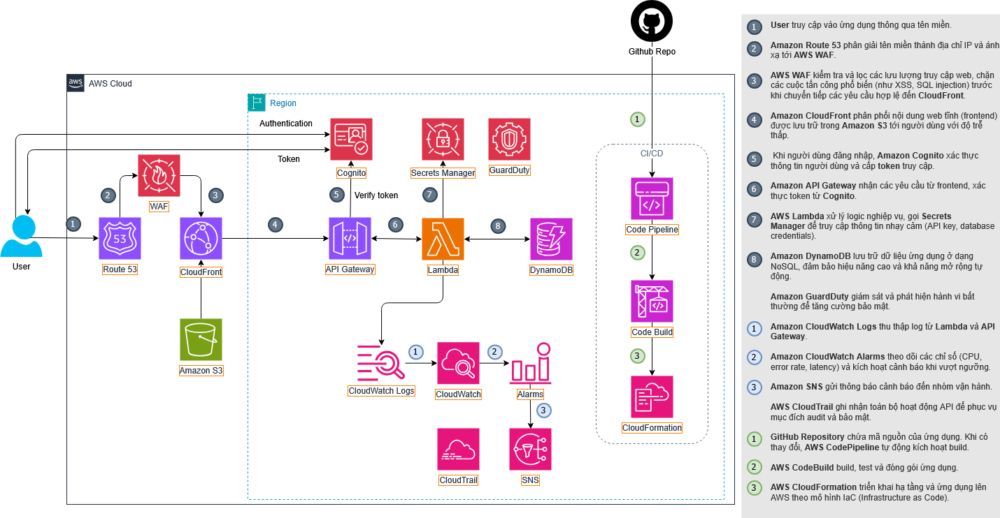

Bản đề xuất
Teaching Center Management System
Giải pháp AWS Serverless cho dự án quản lý trung tâm dạy học
1. Tóm tắt điều hành
Để giải quyết các thách thức trong vận hành trung tâm giáo dục, hệ thống Teaching Center Management System được thiết kế nhằm tích hợp toàn bộ nghiệp vụ cốt lõi: Quản lý nhân sự (HRM), quản lý học viên (SIS), quản lý khách hàng (CRM), quản lý tài chính (Education Payment), và kết nối phụ huynh. Mục tiêu là tối ưu hóa quy trình quản lý, nâng cao hiệu suất vận hành và trải nghiệm học tập tổng thể.
Trong tương lai, hệ thống định hướng mở rộng với các công nghệ tiên tiến như Trí tuệ nhân tạo (AI) và Internet vạn vật (IoT) để cá nhân hóa lộ trình học, phát triển trợ lý ảo học tập, đồng thời hiện đại hóa hạ tầng với lớp học thông minh và quản lý cơ sở vật chất tự động.
2. Tuyên bố vấn đề
Vấn đề hiện tại
Các trung tâm giáo dục hiện nay gặp khó khăn trong việc quản lý đồng bộ giữa lớp học online và offline. Các quy trình như đăng ký khóa học, điểm danh, theo dõi tiến độ, hay thống kê kết quả vẫn chủ yếu thực hiện thủ công hoặc qua nhiều nền tảng riêng lẻ, gây thiếu nhất quán và khó kiểm soát dữ liệu.
Bên cạnh đó, thiếu một hệ thống tập trung để lưu trữ và phân tích dữ liệu học tập theo thời gian thực. Việc phụ thuộc vào các giải pháp bên thứ ba không chỉ tốn kém mà còn phức tạp, khó tùy chỉnh theo nhu cầu. Khi quy mô học viên và lớp học tăng, hệ thống hiện tại thiếu khả năng mở rộng và tự động hóa, làm giảm hiệu quả vận hành cũng như trải nghiệm của người học.
Giải pháp
Nền tảng Teaching Center Management System được triển khai dựa trên kiến trúc AWS Serverless, giúp tối ưu chi phí, tự động mở rộng và đảm bảo tính sẵn sàng cao.
Người dùng truy cập hệ thống thông qua Amazon Route 53 và Amazon CloudFront, tăng tốc độ tải trang và bảo vệ khỏi tấn công DDoS. Giao diện web được lưu trữ tĩnh trên Amazon S3, cung cấp nội dung nhanh và ổn định.
Xác thực người dùng được thực hiện qua Amazon Cognito, đảm bảo an toàn cho tài khoản học viên, giảng viên, phụ huynh và quản trị viên. Sau khi đăng nhập, yêu cầu từ người dùng được xử lý qua Amazon API Gateway, kích hoạt AWS Lambda để thực thi các logic nghiệp vụ chính như quản lý tài khoản, lớp học, đăng ký khóa, điểm danh, cập nhật kết quả và tra cứu lịch học. Toàn bộ dữ liệu được lưu trữ trong Amazon DynamoDB.
Các tài liệu, video bài giảng và bài tập được lưu trong Amazon S3; log hệ thống được gửi tới Amazon CloudWatch Logs để giám sát. CloudWatch Alarms và Amazon SNS tự động gửi cảnh báo khi phát hiện lỗi hoặc hoạt động bất thường. AWS Secrets Manager bảo vệ thông tin nhạy cảm như API key hoặc thông tin kết nối dịch vụ.
Quy trình phát triển và triển khai được tự động hóa thông qua chuỗi AWS CodePipeline – CodeBuild – CloudFormation, đảm bảo CI/CD liền mạch, giảm lỗi cấu hình và rút ngắn thời gian triển khai. AWS CloudTrail và Amazon GuardDuty ghi nhận hoạt động API, phát hiện mối đe dọa và bảo vệ hệ thống khỏi rủi ro bảo mật.
Giải pháp mang lại một nền tảng thống nhất, bảo mật, dễ mở rộng và tối ưu chi phí, giúp trung tâm giáo dục quản lý hiệu quả cả hoạt động đào tạo trực tuyến lẫn tại chỗ, nâng cao trải nghiệm học tập và hiệu suất làm việc của giảng viên.
Lợi ích và hoàn vốn đầu tư (ROI)
- Tăng tốc độ phát triển và triển khai: CI/CD tự động (CodePipeline, CodeBuild, CloudFormation) giúp giảm thời gian phát hành tính năng mới từ vài ngày xuống còn vài giờ.
- Tối ưu chi phí vận hành: Kiến trúc Serverless (Lambda, DynamoDB, API Gateway) chỉ tính phí khi có request, tiết kiệm 40–60% chi phí so với EC2 truyền thống.
- Bảo mật toàn diện: GuardDuty, CloudTrail và Secrets Manager giúp phát hiện sớm rủi ro, giảm thiểu nguy cơ rò rỉ dữ liệu hoặc tấn công.
- Hiệu suất truy cập cao: CloudFront CDN và Route 53 giúp tăng tốc độ truy cập, giảm độ trễ 50–70% so với hosting thông thường.
- Khả năng mở rộng linh hoạt: Hệ thống tự động mở rộng theo lưu lượng, không cần can thiệp thủ công.
- Giám sát chủ động: CloudWatch + SNS cung cấp cảnh báo real-time, giúp đội ngũ kỹ thuật xử lý sự cố kịp thời.
3. Kiến trúc giải pháp

Mô tả chi tiết
-
Application Flow
- Người dùng truy cập vào hệ thống thông qua tên miền, Route53 phân giải tên miền thành địa chỉ IP để ánh xạ đến CloudFront
- CloudFront phân phối nội dung web tĩnh (frontend) từ Amazon S3 đến người dùng một cách nhanh chóng.
- API Gateway tiếp nhận, quản lý tất cả các yêu cầu API từ CloudFront.
- API Gateway tích hợp với Amazon Cognito để xác thực người dùng thông qua JWT token. API Gateway sẽ dùng Cognito để xác thực JWToken mà người dùng gửi kèm trong request để xác thực người dùng trước khi cho phép sử dụng API.
- Sau khi xác thực thành công, API Gateway kích hoạt hàm Lambda (nơi xử lý chính của ứng dụng).
- Nếu Lambda cần truy cập những thông tin nhạy cảm (như mật khẩu database, API key bên thứ 3), Lambda sẽ gọi đến Secret Manager để lấy những thông tin bí mật này.
- Hàm Lambda thực thi logic, truy vấn và lưu trữ dũ liệu vào Amazon DynamoDB (cơ sở dữ liệu NoSQL).
- Lambda tự động ghi lại log thực thi và gửi về CloudWatch Logs. Các log này bao gồm request, error, metrics giúp giám sát và khắc phục sự cố.
-
Security Flow
- AWS CloudTrail ghi lại mọi hành động API trong tài khoản.
- AWS GuardDuty liên tục phân tích các nguồn logs như CloudTrail, VPC Flow Logs và DNS Logs từ Route 53 để phát hiện hành vi độc hại (ví dụ: IAM bị xâm nhập, IP lạ truy cập). Khi phát hiện, GuardDuty tạo Finding và kích hoạt cảnh báo hoặc phản ứng tự động qua SNS hoặc Lambda.
-
Monitoring Flow
- CloudWatch Logs tập trung logs từ Lambda.
- CloudWatch Metrics được tạo ra từ CloudWatch Logs bằng Metric Filter, CloudWatch Alarms được cấu hình từ dựa trên metric để phát hiện lỗi và gửi cảnh báo.
- SNS gửi thông báo tự động qua email hoặc các endpoint đăng ký khi có sự cố.
- CloudTrail ghi lại mọi lệnh gọi API (API calls) xảy ra trong tài khoản(ví dụ: ai đã xóa S3 bucket, ai đã truy cập Secrets Manager). Dữ liệu này được dùng để theo dõi hoạt động quản trị và truy vết sự cố bảo mật. CloudTrail hoạt động song song với CloudWatch để ghi lại toàn bộ hành động API nhằm phục vụ audit và bảo mật.
-
CI/CD Flow
- Source code của toàn ứng dụng sẽ được lưu trên repository Github
- Sau khi kết nối và cấu hình Github với Code Pipeline, khi source code trên GitHub được cập nhật, CodePipeline tự động nhận event webhook để lấy mã nguồn mới nhất. Đây là trung tâm điều phối toàn bộ quá trinh CI/CD, đinh nghĩa các stage: Source - Build - Deploy.
- CodeBuild lấy source từ CodePipeline. CodeBuild chạy file
buildspec.yml để cài đặt dependencies, chạy unit tests và build ứng dụng thành artifact (zip, image, v.v.).
- Sau khi CodeBuild hoàn tất, CodePipeline kích hoạt CloudFormation để tự động tạo hoặc cập nhật toàn bộ tài nguyên (vd: API Gateway, Lambda, DynamoDB, S3, IAM Role, v.v.) lên môi trường AWS.
Dịch vụ AWS sử dụng
|
Services |
Description |
| Frontend & Routing |
Route 53, CloudFront, S3 |
Định tuyến tên miền, phân phối nội dung, lưu trữ tĩnh |
| Backend & Logic |
API Gateway, Lambda, DynamoDB, Secrets Manager, Cognito |
Serverless logic, dữ liệu, xác thực |
| Security & Monitoring |
GuardDuty, CloudWatch Logs, CloudWatch Alarms, CloudWatch Metrics, SNS, CloudTrail |
Phát hiện mối đe dọa, cảnh báo, kiểm toán |
| CI/CD & IaC |
CodePipeline, CodeBuild, CloudFormation, SAM |
Triển khai tự động và quản lý cơ sở hạ tầng |
4. Triển khai kỹ thuật
Các giai đoạn triển khai
- Giai đoạn phát triển (Development)
- Hoàn thiện các logic nghiệp vụ và main flow cho các hàm Lambda.
- Viết file
template.yaml mô tả tài nguyên: API Gateway, Lambda Functions, DynamoDB, Cognito.
- Sử dụng AWS SAM CLI triển khai mã và
template.yaml lên LocalStack để kiểm thử cục bộ.
- Giai đoạn deploy:
- Dùng AWS SAM CLI để triển khai mã và
template.yaml lên môi trường AWS thật.
- Cấu hình AWS CodePipeline và AWS CodeBuild để tự động hóa quy trình CI/CD.
Yêu cầu kỹ thuật
- Có tài khoản AWS sử dụng Free Tier triển khai và sử dụng các tài nguyên bình thường.
- File
template.yaml phải được cấu hình chính xác để mô tả đầy đủ các dịch vụ.
- Hệ thống cần có cơ chế rollback tự động khi xảy ra lỗi triển khai.
5. Lộ trình & Mốc triển khai
- *Trước thực tập (Tuần 0): Học các dịch vụ AWS để chuẩn bị cho project. Khảo sát, phân tích yêu cầu và các bộ phận liên quan của các trung tâm thật (Nhân sự, Đào tạo, Tuyển sinh).
- Thực tập (Tuần 1-12):
- Tuần 1–3: Thiết kế hệ thống, giao diện, kiến trúc tổng thể và chuẩn bị tài liệu (proposal, diagram, template SAM).
- Tuần 4–8: Phát triển các module cốt lõi (quản lý học viên, giảng viên, lớp học, xác thực người dùng). Kiểm thử cục bộ bằng LocalStack.
- Tuần 9–11: Tích hợp các module, hoàn thiện CI/CD pipeline, triển khai hệ thống lên môi trường AWS thật.
- Tuần 12: Kiểm thử tổng thể, đánh giá kết quả, hoàn thiện báo cáo và đề xuất hướng phát triển tiếp theo.
- Sau thực tập (Định hướng mở rộng – Tuần 12 về sau): Nâng cấp hệ thống, tối ưu hiệu năng, và tích hợp công nghệ AI (phân tích học tập cá nhân hóa) cùng IoT (quản lý lớp học thông minh).
6. Ước tính ngân sách
Có thể xem chi phí trên AWS Pricing Calculator
Hoặc tải tệp ước tính ngân sách pdf | csv | json
Chi phí hạ tầng
- S3 Standard: 0.32 USD/tháng (10 GB, 5.000 PUT requests, 100.000 GET requests).
- CloudFront: 1.33 USD/tháng (10 GB, Data transfer out to origin 0.1 GB, Number of requests (HTTPS) 100.000).
- Amazon API Gateway: 0,38 USD/tháng (300.000 request).
- AWS Lambda Function - Include Free Tier: 0.00 USD/tháng (100.000 request, 512 MB lưu trữ).
- Amazon DynamoDB: 0.62 USD/tháng (Data storage 2 GB, 50.000 Write/, 200.000 Read)
- Amazon Cognito Lite Tier: 0.00 USD/tháng (500 MAUs)
- Amazon CloudWatch: 2.10 USD/tháng (3 custom metric, Log 1GB, 1 dashboard, 2 alarms)
- Amazon GuardDuty: 0.0 USD/tháng (Free 30days/region)
- Amazon Route53: 0.9 USD/tháng (1 hosted zone, 1M standard DNS queries)
- AWS Secrets Manager: 0.4 USD/tháng (1 secret)
- AWS CloudTrail: 0.0 USD/tháng (1 trail)
- Amazon SNS: 0.0 USD/tháng (1M request, 1M lambda deliveries)
- AWS CloudFormation: 0.0 USD/tháng
- AWS CodeBuild: 0.25 USD/tháng (on-demand ec2 general1.small, 5 build/month)
- AWS CodePipeline: 0.0 USD/tháng (100 minute/month)
Tổng: 6.30 USD/tháng, 75.60 USD/12 tháng
7. Đánh giá rủi ro
Ma trận rủi ro
- Lỗi cấu hình AWS (IAM, Lambda, API Gateway, Cognito): Ảnh hưởng cao, xác suất trung bình
- Quá giới hạn Free Tier AWS: Ảnh hưởng trung bình, xác suất thấp.
- Mất dữ liệu trên S3/DynamoDB: Ảnh hưởng cao, xác suất thấp.
- Lỗi tích hợp giữa các dịch vụ AWS: Ảnh hưởng trung bình, xác suất thấp.
Chiến lược giảm thiểu
- Cấu hình AWS: Kiểm tra kỹ file
template.yaml, thử triển khai trên LocalStack trước khi deploy thật.
- Vượt giới hạn Free Tier: Theo dõi chi phí thường xuyên, thiết lập cảnh báo chi tiêu (Billing Alert), tối ưu tài nguyên.
- Mất dữ liệu: Bật S3 Versioning, sao lưu định kỳ dữ liệu DynamoDB.
- Lỗi tích hợp dịch vụ: Đảm bảo các dịch vụ hoạt động cùng Region, kiểm tra IAM Role và quyền truy cập chéo giữa các service.
Kế hoạch dự phòng
- Khi gặp lỗi deploy: rollback bằng AWS SAM CLI hoặc khôi phục version Lambda trước đó.
- Khi vượt ngân sách: tạm dừng các dịch vụ không thiết yếu, tối ưu lại kiến trúc và tài nguyên sử dụng.
8. Kết quả kỳ vọng
- Hệ thống quản lý trung tâm dạy học được triển khai thành công trên nền tảng AWS Serverless, đảm bảo hoạt động ổn định, bảo mật, dễ mở rộng.
- Tối ưu chi phí vận hành nhờ tận dụng AWS Free Tier và kiến trúc serverless, giảm chi phí đầu tư hạ tầng ban đầu.
- Đảm bảo hiệu suất truy cập cao, thời gian phản hồi nhanh và khả năng mở rộng linh hoạt.
- Đảm bảo an toàn dữ liệu với các cơ chế backup, versioning, và kiểm soát truy cập chặt chẽ.
- Tích hợp CI/CD giúp tự động hóa triển khai, kiểm thử và rollback, đảm bảo quy trình phát triển hiệu quả và đáng tin cậy.